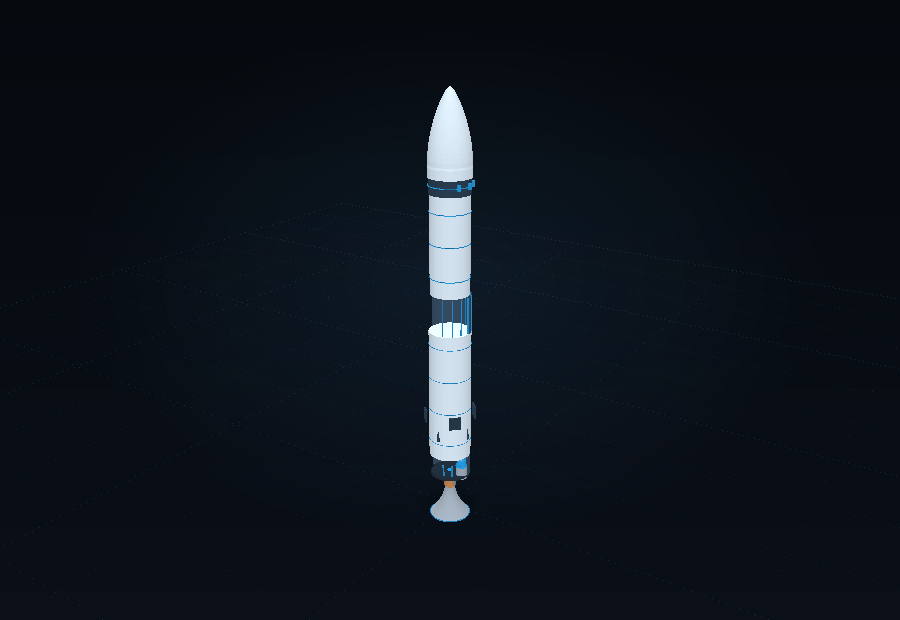
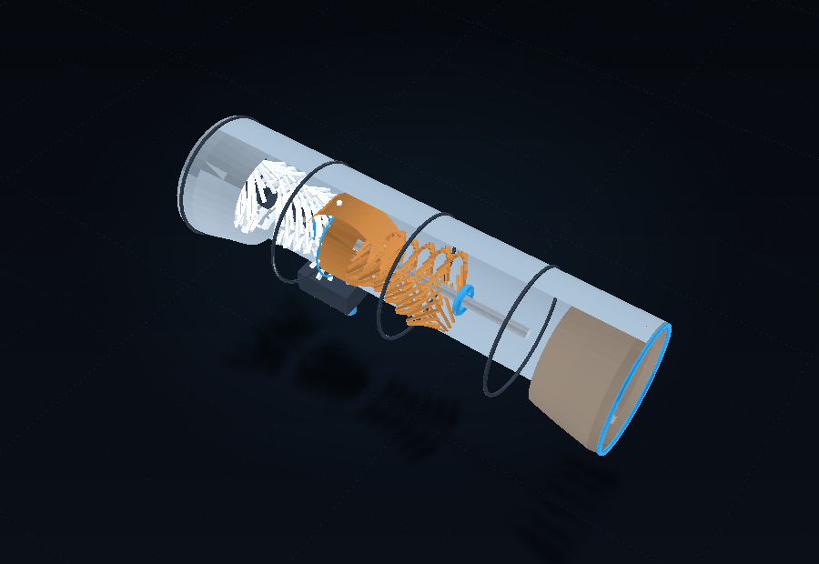
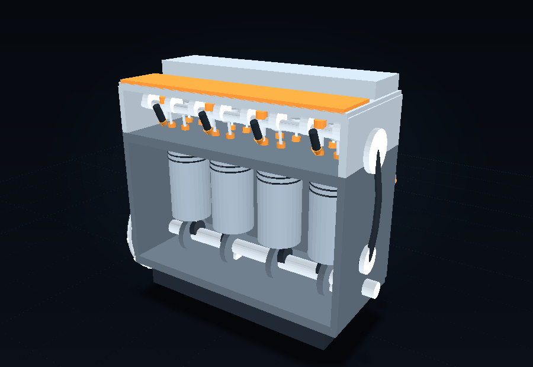
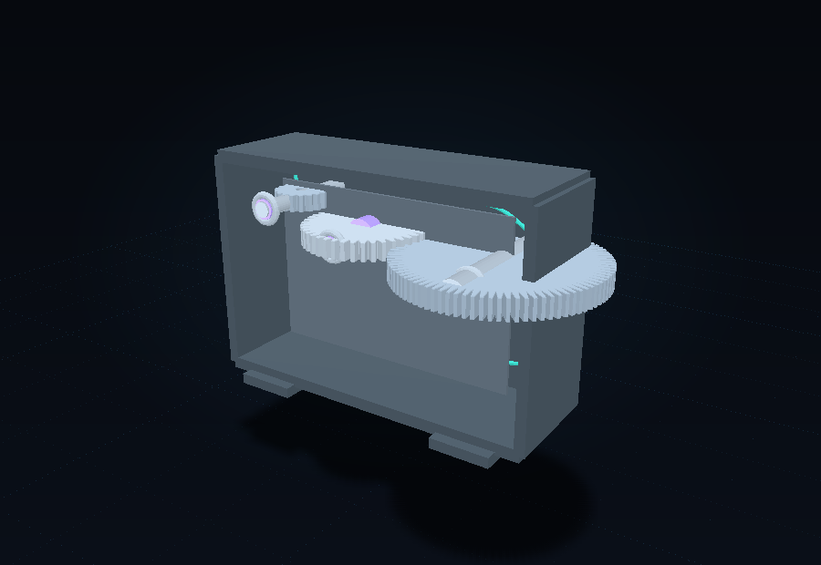
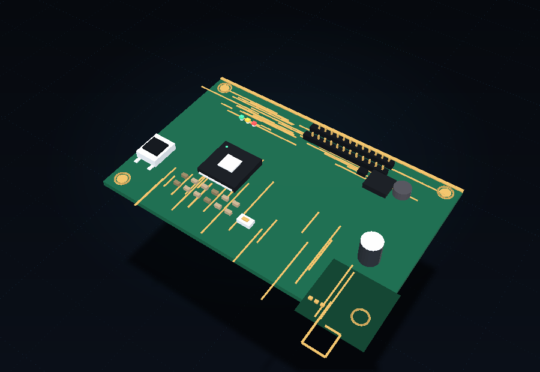
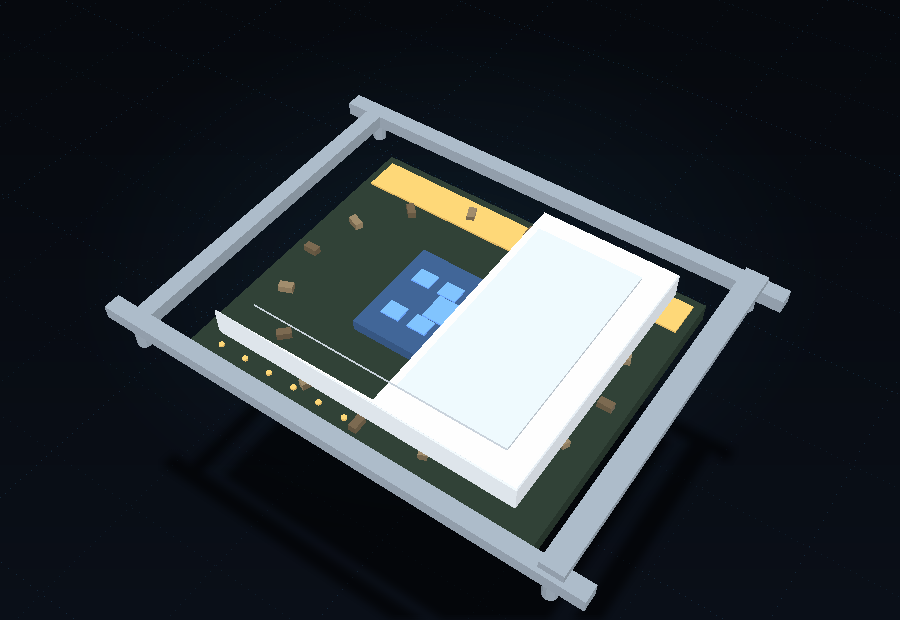
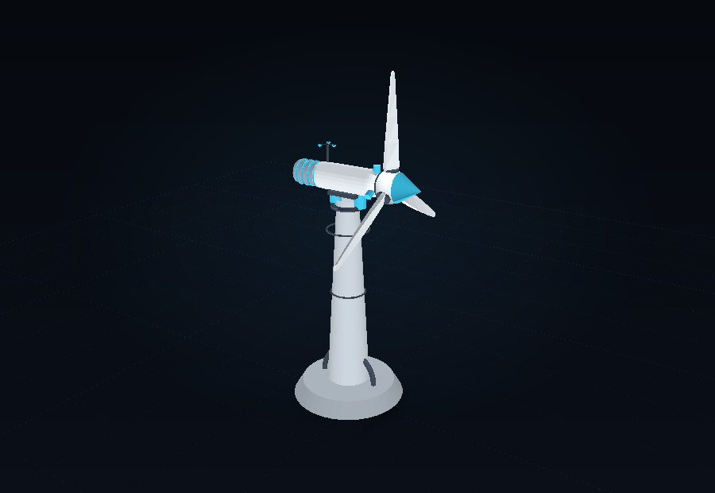

Software-rasterised from the real scene graph in modelFactory.js using the same camera
the application uses. No GPU or browser was available while building, so these renders are the
visual verification that each assembly is real geometry rather than a placeholder.

Astra-9 Launch VehicleAerospace · 13 parts · 17,293 triangles

Single-Spool TurbojetAerospace · 11 parts · 11,926 triangles

Inline-4 Automotive EngineAutomotive · 13 parts · 18,544 triangles

Spur Gear TrainMechanical · 8 parts · 14,735 triangles6-Axis Industrial RobotRobotics · 9 parts · 7,944 triangles

Control Board (PCB)Electronics · 9 parts · 3,874 triangles

CPU PackageComputing · 7 parts · 4,952 triangles

Utility Wind TurbineIndustrial · 10 parts · 10,406 triangles